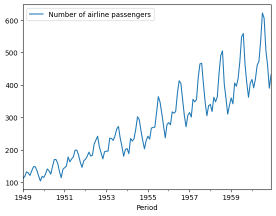

Using Scikit & SKtime for Forecasting
Before we take a deep dive into how ARIMA models work, I wanted to show you some alternatives, mainly using Python ML libraries to do the prediction/forecasting.
In this lesson, we will be using two main libraries: SKforecast (SciKit) and SKtime.
The first library is SciKit:
Using SciKit SKforecast library
SKforecast is an open-source Python Library that implements time series forecasting using ML models; it is compatible with many other ML/DP based techniques like Keras.
If you’re running this in colab:
#installations
!pip install skforecast
# Data manipulation
# ==============================================================================
import numpy as np
import pandas as pd
from skforecast.datasets import fetch_dataset
# Plots
# ==============================================================================
import matplotlib.pyplot as plt
plt.style.use('fivethirtyeight')
plt.rcParams['lines.linewidth'] = 1.5
plt.rcParams['font.size'] = 10
# Modeling and Forecasting
# ==============================================================================
from sklearn.linear_model import Ridge
from sklearn.ensemble import RandomForestRegressor
from sklearn.metrics import mean_squared_error
from sklearn.metrics import mean_absolute_error
from sklearn.preprocessing import StandardScaler
from skforecast.ForecasterAutoreg import ForecasterAutoreg
from skforecast.ForecasterAutoregCustom import ForecasterAutoregCustom
from skforecast.ForecasterAutoregDirect import ForecasterAutoregDirect
from skforecast.model_selection import grid_search_forecaster
from skforecast.model_selection import backtesting_forecaster
from skforecast.utils import save_forecaster
from skforecast.utils import load_forecaster
# Warnings configuration
# ==============================================================================
import warnings
warnings.filterwarnings('once')
# Data download
# ==============================================================================
data = fetch_dataset(name='h2o_exog', raw=True) #this dataset is on australian health system, from 1991 to 2008. This is from Hyndman (2023) fpp3
#Monthly expenditure ($AUD) on corticosteroid drugs that the Australian health system had between 1991 and 2008. Two additional variables (exog_1, exog_2) are simulated.
The above code will install the library and import anything we need to run inference.
data.plot()
here is how that plot should look like:
For use to work with this data, we first need it to be in the format that we can work with (for example, converting fecha to date).
# Data preparation
# ==============================================================================
data = data.rename(columns={'fecha': 'date'})
data['date'] = pd.to_datetime(data['date'], format='%Y-%m-%d')
data = data.set_index('date')
data = data.asfreq('MS')
data = data.sort_index()
data.head()
data.plot()
# Missing values
# ==============================================================================
print(f'Number of rows with missing values: {data.isnull().any(axis=1).mean()}')
# Verify that a temporary index is complete
# ==============================================================================
(data.index == pd.date_range(start=data.index.min(),
end=data.index.max(),
freq=data.index.freq)).all()
Okay, now for the fun part. To train our model, we first need to split our dataset into training and testing. We do this so that we can validate that our model performes well on new data (the testing set); because if we didn’t do this, then we would have no way of knowing if our model actually learned or if it memorized the training set.
# Split data into train-test
# ==============================================================================
steps = 36
data_train = data[:-steps]
data_test = data[-steps:]
print(f"Train dates : {data_train.index.min()} --- {data_train.index.max()} (n={len(data_train)})")
print(f"Test dates : {data_test.index.min()} --- {data_test.index.max()} (n={len(data_test)})")
fig, ax = plt.subplots(figsize=(6, 2.5))
data_train['y'].plot(ax=ax, label='train')
data_test['y'].plot(ax=ax, label='test')
ax.legend();
Training a Model
For our model, we will be implementing a RandomForestRegressor:
# Create and train forecaster
# ==============================================================================
# this model uses the random forest regressor: https://scikit-learn.org/stable/modules/generated/sklearn.ensemble.RandomForestRegressor.html
# and this implements decision trees
# the lag time of 6 means the model will be trained off previous 6 months (forecast horizon)
#
# ==============================================================================
forecaster = ForecasterAutoreg(
regressor = RandomForestRegressor(random_state=123),
lags = 6)
forecaster.fit(y=data_train['y'])
forecaster
Going into the technical details of how this model works is out of scope for this lesson, but if you would like more information please view here
SciKit gives a really easy way to run predictions on your dataset:
# Predictions
# ==============================================================================
steps = 36
predictions = forecaster.predict(steps=steps)
# Plot predictions versus test data
# ==============================================================================
fig, ax = plt.subplots(figsize=(6, 2.5))
data_train['y'].plot(ax=ax, label='train')
data_test['y'].plot(ax=ax, label='test')
predictions.plot(ax=ax, label='predictions')
ax.legend();
which should output something like this:
If you observe the graph above, you can see that our predictions, the orange trace, are actually not that accurate. But why is that? And also, before we fix this, if you wanted to quantify how much we are off, we can use a cost function (something I went over in the previous lessons):
# Test error
# ==============================================================================
error_mse = mean_squared_error(
y_true = data_test['y'],
y_pred = predictions
)
print(f"Test error (MSE): {error_mse}")
which gives something like this:
\[Test error (MSE): 0.07326833976120374\]The reason our predictions are off, in this scenario, is not because we are using the wrong type of model. It’s because we are using it in the wrong way! See, if you observe the original graph and dates, you will notice that the data seems to be in months!! It has a seasonality, every 12 months (or as it seems like from the graph)! But we are running our predictions across 6-lags. So, all we need to do is change that 6 to a 12, because our data has a repetitive pattern that occurs every 12 months.
forecaster = ForecasterAutoreg(
regressor = RandomForestRegressor(random_state=123),
lags = 12)
forecaster.fit(y=data_train['y'])
Much better! But there is also an alternative solution SciKit provides, which is to go trial-error and test different hyperparameters to see which combination best represent the data.
Hyperparameter grid search
# Hyperparameter grid search
# ==============================================================================
steps = 36
forecaster = ForecasterAutoreg(
regressor = RandomForestRegressor(random_state=123),
lags = 12 # This value will be replaced in the grid search
)
# Candidate values for lags
lags_grid = [10, 20]
# Candidate values for regressor's hyperparameters
param_grid = {
'n_estimators': [100, 500],
'max_depth': [3, 5, 10]
}
results_grid = grid_search_forecaster(
forecaster = forecaster,
y = data_train['y'],
param_grid = param_grid,
lags_grid = lags_grid,
steps = steps,
refit = False,
metric = 'mean_squared_error',
initial_train_size = int(len(data_train)*0.5),
fixed_train_size = False,
return_best = True,
n_jobs = 'auto',
verbose = False
)
And if you plot the results_grid you can see that the model with the lowest error is the one that has these parameters:
# Create and train forecaster with the best hyperparameters and lags found
# ==============================================================================
regressor = RandomForestRegressor(n_estimators=500, max_depth=3, random_state=123)
forecaster = ForecasterAutoreg(
regressor = regressor,
lags = 20
)
forecaster.fit(y=data_train['y'])
Which, if you plot the predictions graph, you will see is pretty close to our estimation of 12-lags!
If you would like a more thorough introduction, please view this source
The second library I wanted to share is SKtime:
Using SKtime library
The Sktime library is another open-source Python Library used for implementing AI/ML models for forecasting, validation, training, etc. for time series data.
!pip install sktime
from sktime.datasets import load_airline
from sktime.datasets import load_solar
from sktime.datasets import load_shampoo_sales
from sktime.forecasting.base import ForecastingHorizon
from sktime.forecasting.model_selection import temporal_train_test_split
from sktime.forecasting.theta import ThetaForecaster
from sktime.performance_metrics.forecasting import mean_absolute_percentage_error
import pandas as pd
from sktime.utils.plotting import plot_series
import sys
from sklearn.metrics import mean_absolute_error, r2_score
from sktime.forecasting.arima import AutoARIMA
from sktime.forecasting.fbprophet import Prophet
import matplotlib.pyplot as plt
import numpy as np
Get the airline data:
y = pd.DataFrame(load_airline())
y.plot()

As you probably already observed, this series also has some seasonality. And seeing that it is airline passengers, we would expect this to peak once a year, maybe every season, like every summer when people want to go on vacation.
Like last time, we split our data into training and testing:
y_train, y_test = temporal_train_test_split(y, train_size=.8)
fh = ForecastingHorizon(y_test.index+10, is_relative=False)
#print(y_test.index)
forecaster = ThetaForecaster(sp=12)
forecaster.fit(y_train)
The last part of that code also loads our model, and trains it (also known as fitting; I will explain why this is in later lessons). Now, we should have a model that is capable of forecasting airline passenger traffic,
y_pred = forecaster.predict(fh)
mean_absolute_percentage_error(y_test, y_pred)
plot_series(y, y_pred)
Ans as you can see, the models does ok at predicting; we could probably make this better, but this is good for now. If you want more information on this library, you can view it here
And voila!! I hope this was helpful and got you excited and ready to make your own forecasting models from SCRATCH!! See you next time!
Subscribe to Burak Ayyorgun
Get the latest posts delivered right to your inbox